Harmonic forced vibration analysis of simply-supported thin (solid) plate
Contents
Link to the m-file.
Description
Harmonic forced vibration problem is solved for a homogeneous square plate, simply-supported on the circumference. This is the TEST 13H from the Abaqus v 6.12 Benchmarks manual. The test is recommended by the National Agency for Finite Element Methods and Standards (U.K.): Test 13 from NAFEMS “Selected Benchmarks for Forced Vibration,” R0016, March 1993.
The plate is discretized with hexahedral solid elements. The simple support condition is approximated by distributed rollers on the boundary. Because only the out of plane displacements are prevented, the structure has three rigid body modes in the plane of the plate.
The nonzero benchmark frequencies are (in hertz): 2.377, 5.961, 5.961, 9.483, 12.133, 12.133, 15.468, 15.468 [Hz].
Solution
function pub_TEST13H_vibration
Define the material properties.
pu=physical_units_struct;
% Parameters:
E = 200*pu.GIGA*pu.PA;
nu = 0.3;
rho= 8000*pu.KG/pu.M^3;
Geometrical dimensions of the plate (the full structure).
L =10*pu.M;% span of the plate t =0.05*pu.M;% thickness of the plate
The chosen mesh parameters. This is the coarse mesh as specified in the benchmark.
nL= 8;% number of elements span wise nt = 1;% number of elements through the thickness
The mesh is generated. The chosen elements are the serendipity hexahedra.
[fens,fes] = H20_block(L,L,t,nL,nL,nt);;
We are ready to bundle up the model data so they can be passed to the solver.
clear model_data model_data.fens =fens;% the finite element node set
Note that we are specifying the material parameters and the material orientation matrix. The integration rule is going to be used for both the stiffness matrix and the mass matrix.
clear region region.rho =rho; region.E=E; region.nu=nu; region.fes= fes;% set of finite elements for the interior of the domain region.integration_rule = gauss_rule (struct('dim', 3, 'order', 2)); model_data.region{1} =region;
The support conditions approximate simply-supported edges. All the sides of the plate are fixed in the transverse direction (Z displacement).
clear essential essential.component= [3]; essential.fixed_value= 0; essential.node_list = [fenode_select(fens, struct('box', [0,0,-Inf,Inf,-Inf,Inf],... 'inflate',0.001*t)),fenode_select(fens, struct('box', [L,L,-Inf,Inf,-Inf,Inf],... 'inflate',0.001*t)),fenode_select(fens, struct('box', [0,L,0,0,-Inf,Inf],... 'inflate',0.001*t)),fenode_select(fens, struct('box', [0,L,L,L,-Inf,Inf],... 'inflate',0.001*t))]; model_data.boundary_conditions.essential{1} = essential;
How many natural frequencies should be calculated? Since there are three in-plane rigid-body modes, this amounts to eight deformation modes (all happen to be out of plane).
model_data.neigvs= 11;
Three rigid body modes are to be expected with the present boundary conditions. We have to use mass shifting. 1 Hz appears to be a good frequency between the first nonzero natural frequency and the rigid body mode frequency of zero.
model_data.omega_shift= 1*2*pi;
The modal analysis solver is now ready to be invoked.
model_data = deformation_linear_modal_analysis(model_data);
Warning: Some (3) negative angular frequencies detected
Due to the mass-shifting, the frequencies may come out with nonzero (but hopefully small) imaginary parts. Remove the imaginary parts as they have no meaning.
format short e model_data.Omega' model_data.Omega = real(model_data.Omega); model_data.W = real(model_data.W);
ans = Columns 1 through 6 9.0841e-04 1.1966e-03 1.3996e-03 1.4873e+01 3.7283e+01 3.7283e+01 Columns 7 through 11 6.0004e+01 7.4609e+01 7.4609e+01 9.8521e+01 9.8521e+01
Furthermore, let us get rid of the rigid body modes (first three).
model_data.Omega = model_data.Omega(4:end);
model_data.W = model_data.W(:,4:end);
The modal-plot algorithm can be called to produce the plot of the mode shapes.
model_data.postprocessing.u_scale= 2;
model_data.postprocessing.camera =[ 6.4247e+01 -1.9301e+01 5.9707e+01 5.0567e+00 5.2004e+00 -2.5473e-04 -6.2943e-01 2.6207e-01 7.3153e-01 5.4117e+00];
for j=1:8
model_data.postprocessing.modelist=j;
model_data=deformation_plot_modes(model_data);
snapnow;
end
Mode 1, frequency 2.3672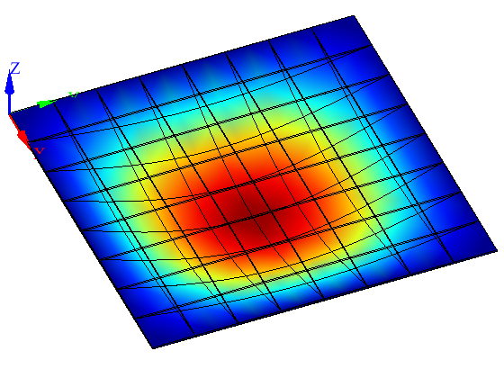
Mode 2, frequency 5.9338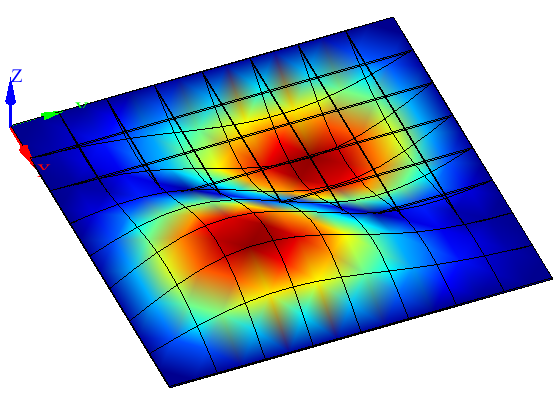
Mode 3, frequency 5.9338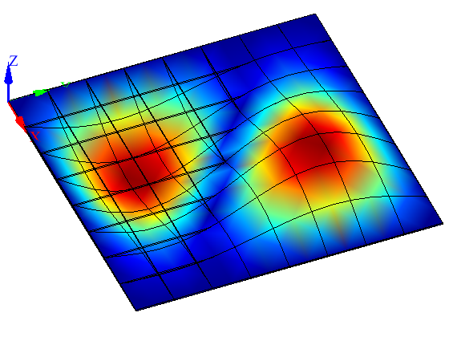
Mode 4, frequency 9.55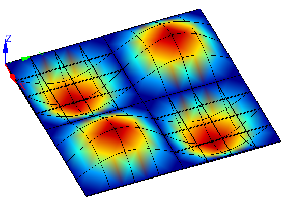
Mode 5, frequency 11.8744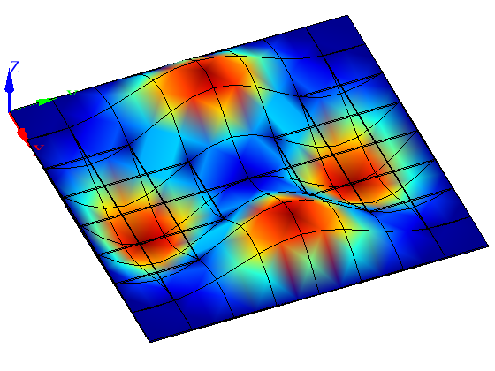
Mode 6, frequency 11.8744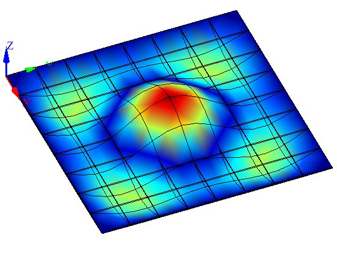
Mode 7, frequency 15.6801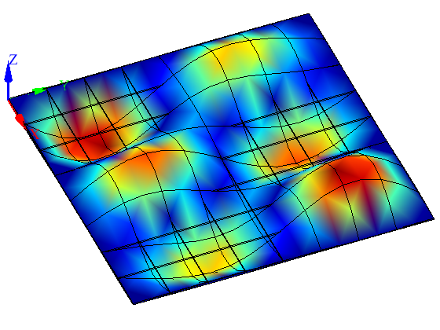
Mode 8, frequency 15.6801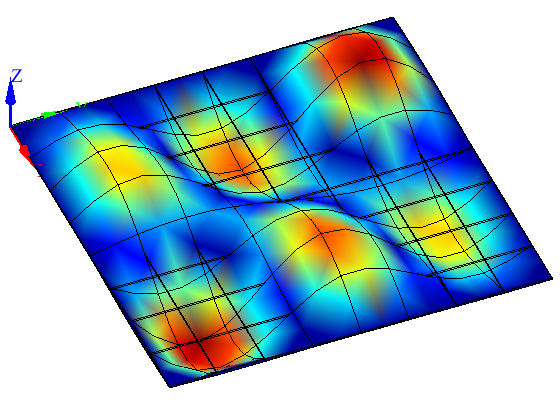
Harmonic force vibration.
The computed frequencies should be compared with the benchmark values of 2.377, 5.961, 5.961, 9.483, 12.133, 12.133, 15.468, 15.468 [Hz]. In percent we have the comparison
format short
f=model_data.Omega'/2/pi;
f./[2.377, 5.961, 5.961, 9.483, 12.133, 12.133, 15.468, 15.468]*100
ans = Columns 1 through 7 99.5868 99.5432 99.5432 100.7065 97.8682 97.8683 101.3711 Column 8 101.3711
The free-vibration model appears to be sufficiently accurate.
Now we are going to modify the above three-vibration model to incorporate harmonic forcing. The entire top surface of the plate is loaded with uniform pressure.
Define the traction load of 100 N/m^2 over the entire surface. This traction load has harmonic dependence but its distribution does not change as a function of frequency.
clear traction traction.traction = [0;0;100*pu.NT/pu.M^2]; bfes= mesh_boundary(fes,[]); topl =fe_select (fens,bfes,struct('box', [-Inf,Inf,-Inf,Inf,t,t],... 'inflate',t/100)); traction.fes= subset(bfes,topl); traction.integration_rule =gauss_rule(struct('dim',2, 'order',2)); model_data.boundary_conditions.traction{1} = traction;
Compute the parameters of Rayleigh damping. For the two selected frequencies we have the relationship between the damping ratio and the Rayleigh parameters
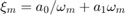
where 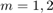. Solving for the Rayleigh parameters 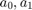 yields:
zeta1= 0.02; zeta2 =0.02;
o1 =2*pi*f(1); o2 =2*pi*f(end);
Rayleigh_mass = 2*(o1*o2)/(o2^2-o1^2)*(o2*zeta1-o1*zeta2);% a0
Rayleigh_stiffness = 2*(o1*o2)/(o2^2-o1^2)*(-1/o2*zeta1+1/o1*zeta2);% a1
model_data.Rayleigh_mass =Rayleigh_mass;
model_data.Rayleigh_stiffness =Rayleigh_stiffness;
These are the frequencies at which to evaluate the frequency response function. Note that we are taking one of the points as the calculated fundamental frequency.
model_data.frequencies = [linspace(0,f(1),20),linspace(f(1),15,70)];
The function below will be called with each computed displacement from within the solver. The amplitude of the deflection at the midpoint in the direction of the load will be saved for each frequency.
midpoint=fenode_select (fens,... struct('box',[L/2 L/2 L/2 L/2 0 0],'inflate',t/100)); midpointu = []; function output(f, model_data) Um=model_data.u.reshape(gather_values(model_data.u, midpoint)); midpointu= [midpointu Um(3)]; end model_data.observer =@output;
Call the steady-state vibration solver.
model_data =deformation_linear_steady_state_vibration(model_data);
The computed displacement FRF graph is displayed in this figure. The reference maximum is 45.42 mm.
figure; set_graphics_defaults
plot(model_data.frequencies,abs(midpointu)/pu.MM,...
'bx-','Markersize',3,'linewidth',2); hold on
xlabel( 'Frequency [Hz]'),ylabel('Midpoint displacement amplitude [mm]')
grid on
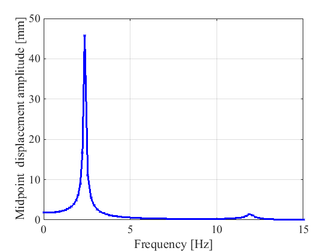 In this figure we show separately the real and imaginary part of the midpoint displacement.
figure;; set_graphics_defaults
plot( model_data.frequencies , real(midpointu)/pu.MM,...
'Markersize',3,'linewidth',2); hold on
plot( model_data.frequencies , imag(midpointu)/pu.MM,...
'r','Markersize',3,'linewidth',2); hold on
xlabel( 'Frequency [Hz]'),
ylabel('Real and imaginary part of the displacement [mm]')
legend({'Real', 'Imaginary'})
grid on
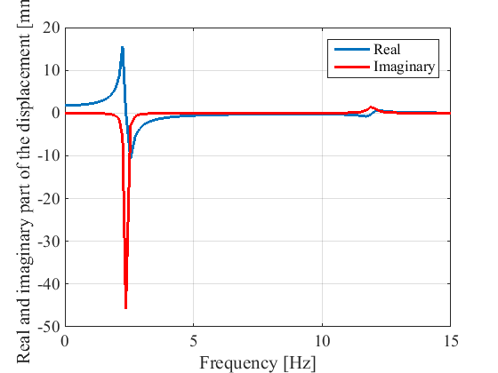 In this figure we show the phase shift of the midpoint displacement FRF.
figure;; set_graphics_defaults
plot( model_data.frequencies , ...
atan2(imag(midpointu),real(midpointu) )/pi*180,...
'r','Markersize',3,'linewidth',2); hold on
set(gca,'ylim',[-180,180])
xlabel( 'Frequency [Hz]'),ylabel('Phase shift of the displacement')
grid on
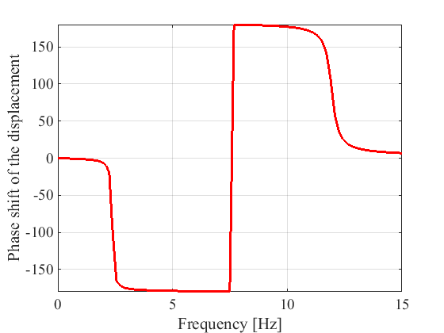 The tensile stress at the center of the plate (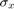) is now evaluated by sweeping through the frequencies around the fundamental frequency. Note that the observer function below calculates the stress separately for the real and imaginary parts of the displacement and combines the resulting stresses.
max_tensile_stress = []; context.ignore=0;
midp_l = fe_select(fens,model_data.region{1}.fes,struct('box',[L/2,L/2,L/2,L/2,-inf,inf],'inflate',t/100,'anynode',true));
femm=model_data.region{1}.femm; femm.fes = subset(femm.fes,midp_l);
function output_max_tensile_stress(f, model_data)
clear fldR fldI fld
U = model_data.u; U.values = real(model_data.u.values);
fldR = field_from_integration_points_spr (femm, ...
model_data.geom, U, [], 'Cauchy', 1, context);
U = model_data.u; U.values = imag(model_data.u.values);
fldI = field_from_integration_points_spr (femm, ...
model_data.geom, U, [], 'Cauchy', 1, context);
max_tensile_stress(end+1)=max(sqrt(fldR.values(:,1).^2 + fldI.values(:,1).^2));
end
model_data.observer =@output_max_tensile_stress;
These are the frequencies at which to evaluate the frequency response function. Note the limited range as we are only investigating the vicinity of the fundamental frequency.
model_data.frequencies = [linspace(0,f(1),20),linspace(f(1),2*f(1),20)];
Call the steady-state vibration solver.
model_data =deformation_linear_steady_state_vibration(model_data);
Present the stress FRF in a graph.
figure; set_graphics_defaults
plot(model_data.frequencies,max_tensile_stress/(pu.MEGA*pu.PA),...
'm+-','Markersize',3,'linewidth',2); hold on
xlabel( 'Frequency [Hz]'),ylabel('Maximum tensile stress [MPa]')
grid on
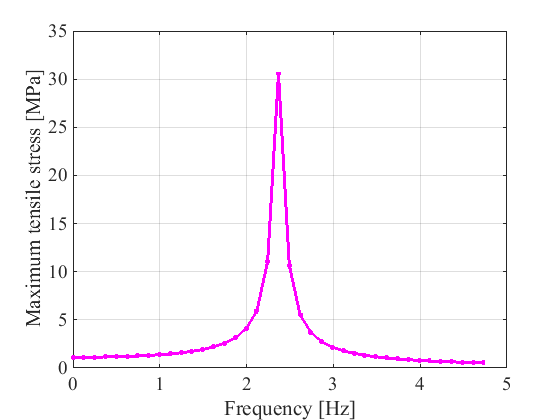 The reference value of the peak stress is 30.03 N/mm^2. Clearly our result is only a couple of percent off.
max(max_tensile_stress/(pu.MEGA*pu.PA))
ans = 30.5862
end